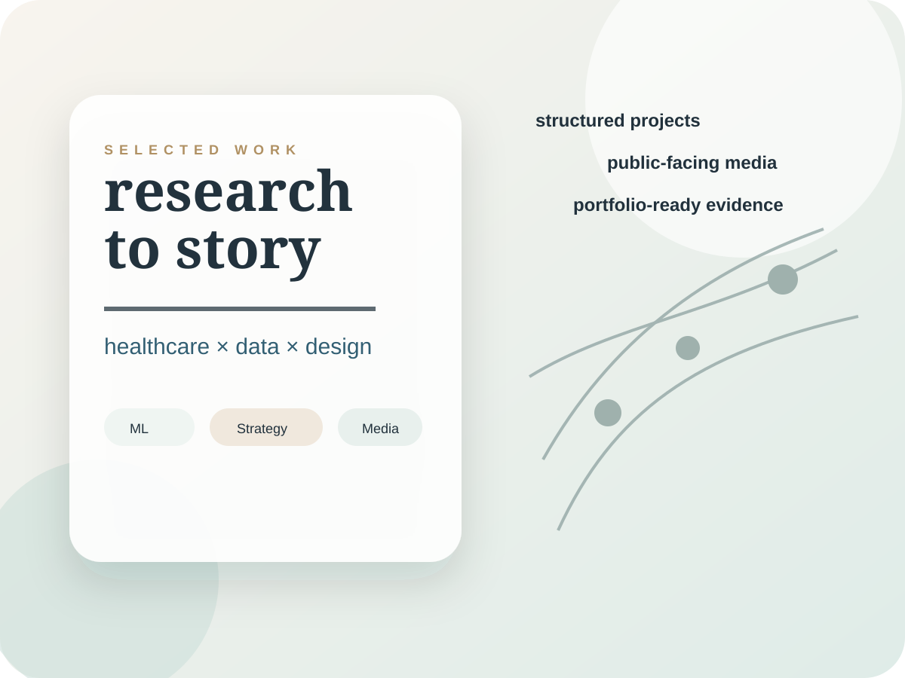
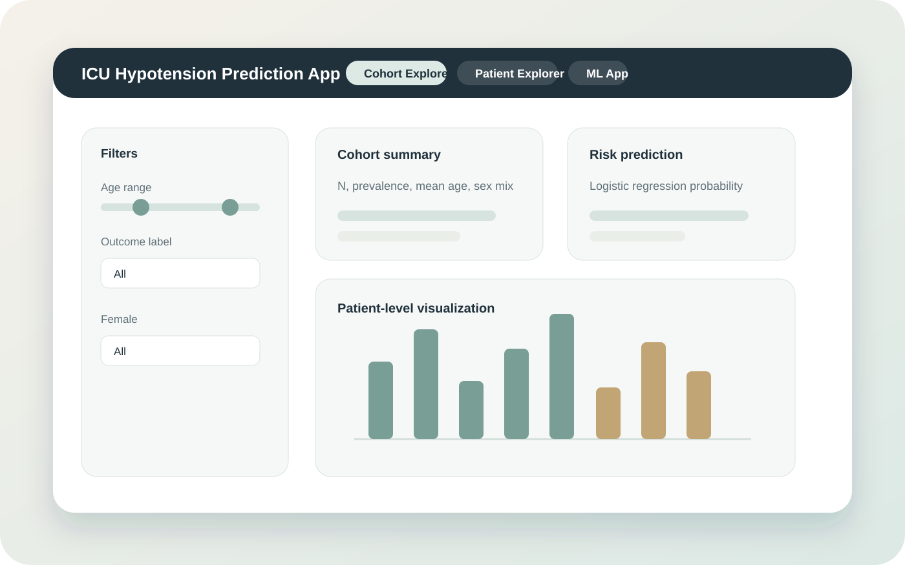
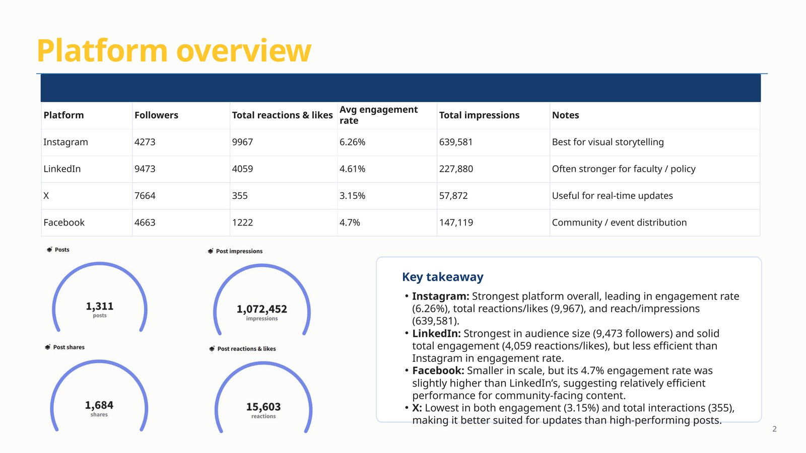
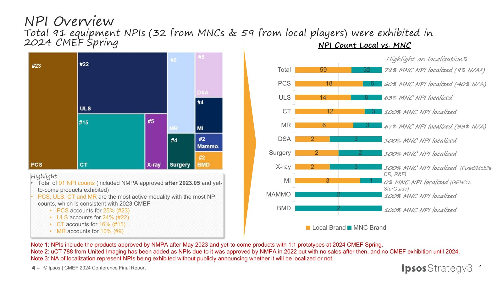
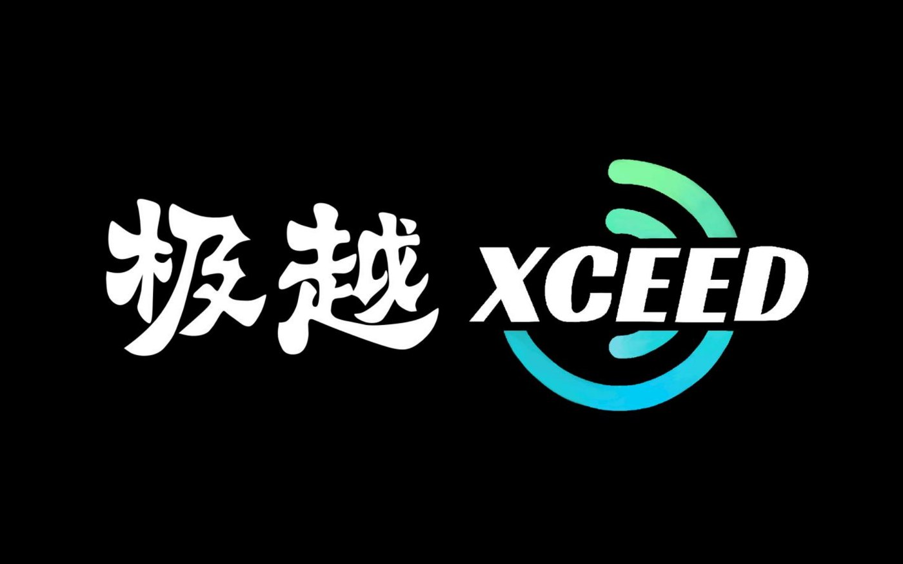
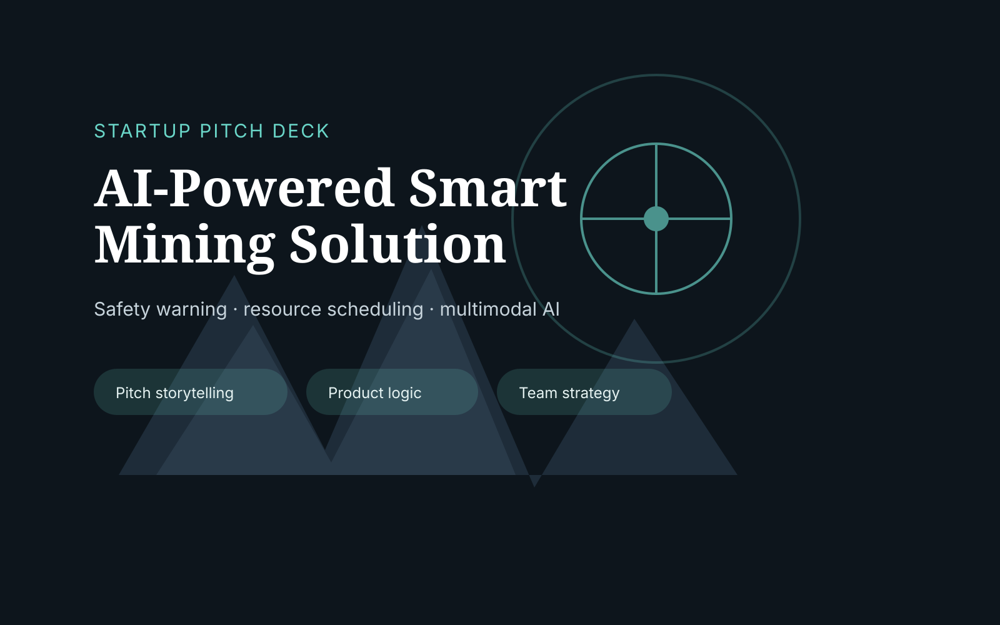
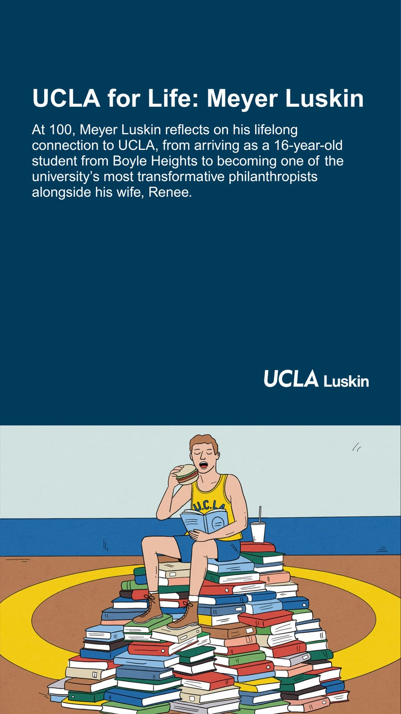
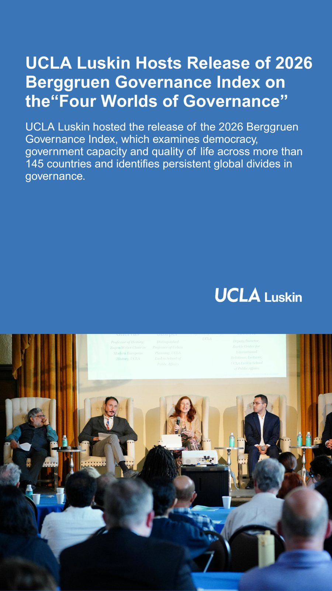

Visual portfolio
Jinghan Lian
Research, communications, and visual storytelling for health, public affairs, and data-informed organizations.
I shape dense material into clean public-facing narratives: analytics reports, healthcare research, pitch decks, social content, and short promotional videos.

About
A hybrid communicator with a data spine.
I am a UCLA Master of Data Science in Health student with experience across public affairs communications, healthcare market research, social media analytics, visual design, and clinical data science.
Tools: R, Python, SQL, GitHub, Shiny, Quarto, Canva, Photoshop, Premiere Pro, Hootsuite, Power BI, and WordPress.
Part I · Projects
Structured work: healthcare analytics, strategy decks, reports, and product-style prototypes.

Clinical data product
ICU Hypotension Risk Explorer
A MIMIC-IV clinical prediction project with a reproducible report and Shiny app prototype for cohort exploration, patient-level comparison, and risk prediction.

Healthcare data science
Neural Network Obesity Prediction
A scaled neural-network modeling report comparing deep learning and ensemble approaches for lifestyle-based obesity risk prediction.

Social media strategy
Social Media Analytics Report
Cross-platform social analytics translated into practical content pillars, platform roles, and engagement recommendations.

Healthcare market research
MedTech Market Intelligence Deck
A healthcare market intelligence deck synthesizing product launches, modality trends, competitive moves, and strategic implications.

Brand identity
XCEED Visual Identity System
A visual identity system exploring logo structure, layout discipline, application scenarios, and brand atmosphere.

Startup pitch
AI-Powered Smart Mining Pitch
A pitch narrative around safety warning, resource scheduling, multimodal AI, and operational decision support.
Part II · Stories and video
Promotional assets built for fast reading, platform fit, and clean visual hierarchy.


Story designs
Instagram Story Series
Story-format assets designed for concise public affairs communication and mobile-first scanning.
Contact
Clear work, clean systems, warm storytelling.
Open to healthcare communications, venture operations, data storytelling, and public-facing strategy roles.
jinghanlian1209@g.ucla.edu